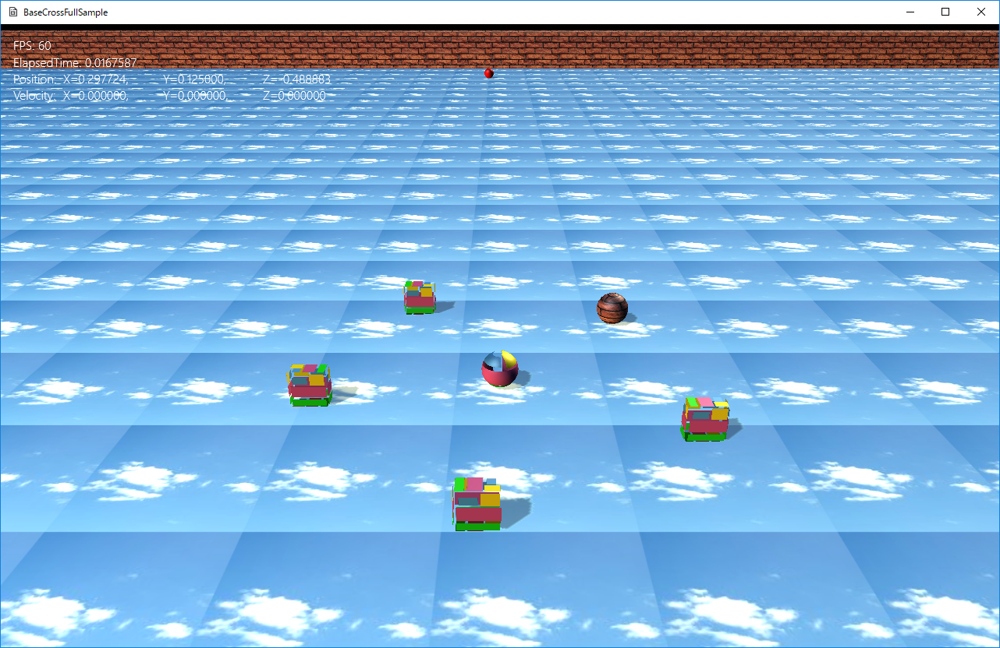

図0601a
このステージはCSVファイルから読み込んで構成しています（プレイヤー以外）。
0,0,0,0,0,0,0,0,0,0,0,0,0,0,0,0,0,0,0,0,0,0,0,0,0,0,0,0,0,0,0,0,0,0,0,0,0,0,0,0 0,0,0,0,0,0,0,0,0,0,0,0,0,0,0,0,0,0,0,0,0,0,0,0,0,0,0,0,0,0,0,0,0,0,0,0,0,0,0,0 0,0,0,0,0,0,0,0,0,0,0,0,0,0,0,0,0,0,0,0,0,0,0,0,0,0,0,0,0,0,0,0,0,0,0,0,0,0,0,0 0,0,0,0,0,0,0,0,0,0,0,0,0,0,0,0,0,0,0,0,0,0,0,0,0,0,0,0,0,0,0,0,0,0,0,0,0,0,0,0 0,0,0,0,0,0,0,0,0,0,0,0,0,0,0,0,0,0,0,2,0,0,0,0,0,0,0,0,0,0,0,0,0,0,0,0,0,0,0,0 0,0,0,0,0,0,0,0,0,0,0,0,0,0,0,0,0,0,0,0,0,0,0,0,0,0,0,0,0,0,0,0,0,0,0,0,0,0,0,0 0,0,0,0,0,0,0,0,0,0,0,0,0,0,0,0,0,0,0,0,0,0,0,0,0,0,0,0,0,0,0,0,0,0,0,0,0,0,0,0 0,0,0,0,0,0,0,0,0,0,0,0,0,0,0,0,0,0,0,0,0,0,0,0,0,0,0,0,0,0,0,0,0,0,0,0,0,0,0,0 0,0,0,0,0,0,0,0,0,0,0,0,0,0,0,0,0,0,0,0,0,0,0,0,0,0,0,0,0,0,0,0,0,0,0,0,0,0,0,0 0,0,0,0,0,0,0,0,0,0,0,0,0,0,0,0,0,0,0,1,0,0,0,0,0,0,0,0,0,3,0,0,0,0,0,0,0,0,0,0 0,0,0,0,0,0,0,0,0,0,0,0,0,0,0,0,0,0,0,0,0,0,0,0,0,0,0,0,0,0,0,0,0,0,0,0,0,0,0,0 0,0,0,0,0,0,0,0,0,0,0,0,0,0,0,0,0,0,0,0,0,0,0,0,0,0,0,0,0,0,0,0,0,0,0,0,0,0,0,0 0,0,0,0,0,0,0,0,0,0,0,0,0,0,0,0,0,0,0,0,0,0,0,0,0,0,0,0,0,0,0,0,0,0,0,0,0,0,0,0 0,0,0,0,0,0,0,0,0,0,0,0,0,0,0,0,0,0,0,0,0,0,0,0,0,0,0,0,0,0,0,0,0,0,0,0,0,0,0,0 0,0,0,0,0,0,0,0,0,0,0,0,0,0,0,0,0,0,0,0,0,0,0,0,0,0,0,0,0,0,0,0,0,0,0,0,0,0,0,0 0,0,0,0,0,0,0,0,0,0,0,0,0,0,0,0,0,0,0,0,0,0,0,0,0,0,0,0,0,0,0,0,0,0,0,0,0,0,0,0 0,0,0,0,0,0,0,0,0,0,0,0,0,0,0,0,0,0,0,0,0,0,0,0,0,0,0,0,0,0,0,0,0,0,0,0,0,0,0,0 0,0,0,0,0,0,0,0,0,0,0,0,0,0,0,0,0,0,0,0,0,0,0,0,0,0,0,0,0,0,0,0,0,0,0,0,0,0,0,0 0,0,0,0,0,0,0,0,0,0,0,0,0,0,0,0,0,0,0,0,0,0,0,0,0,0,0,0,0,0,0,0,0,0,0,0,0,0,0,0 0,0,0,0,2,0,0,0,0,1,0,0,0,0,0,0,0,0,0,A,0,0,0,0,0,0,0,0,0,1,0,0,0,0,2,0,0,0,0,0 0,0,0,0,0,0,0,0,0,0,0,0,0,0,0,0,0,0,0,0,0,0,0,0,0,0,0,0,0,0,0,0,0,0,0,0,0,0,0,0 0,0,0,0,0,0,0,0,0,0,0,0,0,0,0,0,0,0,0,0,0,0,0,0,0,0,0,0,0,0,0,0,0,0,0,0,0,0,0,0 0,0,0,0,0,0,0,0,0,0,0,0,0,0,0,0,0,0,0,0,0,0,0,0,0,0,0,0,0,0,0,0,0,0,0,0,0,0,0,0 0,0,0,0,0,0,0,0,0,0,0,0,0,0,0,0,0,0,0,0,0,0,0,0,0,0,0,0,0,0,0,0,0,0,0,0,0,0,0,0 0,0,0,0,0,0,0,0,0,0,0,0,0,0,0,0,0,0,0,0,0,0,0,0,0,0,0,0,0,0,0,0,0,0,0,0,0,0,0,0 0,0,0,0,0,0,0,0,0,0,0,0,0,0,0,0,0,0,0,0,0,0,0,0,0,0,0,0,0,0,0,0,0,0,0,0,0,0,0,0 0,0,0,0,0,0,0,0,0,0,0,0,0,0,0,0,0,0,0,0,0,0,0,0,0,0,0,0,0,0,0,0,0,0,0,0,0,0,0,0 0,0,0,0,0,0,0,0,0,0,0,0,0,0,0,0,0,0,0,0,0,0,0,0,0,0,0,0,0,0,0,0,0,0,0,0,0,0,0,0 0,0,0,0,0,0,0,0,0,0,0,0,0,0,0,0,0,0,0,0,0,0,0,0,0,0,0,0,0,0,0,0,0,0,0,0,0,0,0,0 0,0,0,0,0,0,0,0,0,0,0,0,0,0,0,0,0,0,0,1,0,0,0,0,0,0,0,0,0,0,0,0,0,0,0,0,0,0,0,0 0,0,0,0,0,0,0,0,0,0,0,0,0,0,0,0,0,0,0,0,0,0,0,0,0,0,0,0,0,0,0,0,0,0,0,0,0,0,0,0 0,0,0,0,0,0,0,0,0,0,0,0,0,0,0,0,0,0,0,0,0,0,0,0,0,0,0,0,0,0,0,0,0,0,0,0,0,0,0,0 0,0,0,0,0,0,0,0,0,0,0,0,0,0,0,0,0,0,0,0,0,0,0,0,0,0,0,0,0,0,0,0,0,0,0,0,0,0,0,0 0,0,0,0,0,0,0,0,0,0,0,0,0,0,0,0,0,0,0,0,0,0,0,0,0,0,0,0,0,0,0,0,0,0,0,0,0,0,0,0 0,0,0,0,0,0,0,0,0,0,0,0,0,0,0,0,0,0,0,2,0,0,0,0,0,0,0,0,0,0,0,0,0,0,0,0,0,0,0,0 0,0,0,0,0,0,0,0,0,0,0,0,0,0,0,0,0,0,0,0,0,0,0,0,0,0,0,0,0,0,0,0,0,0,0,0,0,0,0,0 0,0,0,0,0,0,0,0,0,0,0,0,0,0,0,0,0,0,0,0,0,0,0,0,0,0,0,0,0,0,0,0,0,0,0,0,0,0,0,0 0,0,0,0,0,0,0,0,0,0,0,0,0,0,0,0,0,0,0,0,0,0,0,0,0,0,0,0,0,0,0,0,0,0,0,0,0,0,0,0 0,0,0,0,0,0,0,0,0,0,0,0,0,0,0,0,0,0,0,0,0,0,0,0,0,0,0,0,0,0,0,0,0,0,0,0,0,0,0,0 0,0,0,0,0,0,0,0,0,0,0,0,0,0,0,0,0,0,0,0,0,0,0,0,0,0,0,0,0,0,0,0,0,0,0,0,0,0,0,0
class GameStage : public Stage {
//CSVファイルそのA
CsvFile m_GameStageCsvA;
//CSVファイルそのB
CsvFile m_GameStageCsvB;
//以下略
};
void GameStage::OnCreate() {
try {
wstring DataDir;
App::GetApp()->GetDataDirectory(DataDir);
////CSVファイルそのAの読み込み
m_GameStageCsvA.SetFileName(DataDir + L"GameStageA.csv");
m_GameStageCsvA.ReadCsv();
////CSVファイルそのBの読み込み
m_GameStageCsvB.SetFileName(DataDir + L"GameStageB.csv");
m_GameStageCsvB.ReadCsv();
//中略
}
catch (...) {
throw;
}
}
//敵の作成
void GameStage::CreateEnemy() {
//オブジェクトのグループを作成する
auto Group = CreateSharedObjectGroup(L"EnemyGroup");
//CSVの全体の配列
//CSVからすべての行を抜き出す
auto& LineVec = m_GameStageCsvA.GetCsvVec();
for (size_t i = 0; i < LineVec.size();i++) {
//トークン（カラム）の配列
vector<wstring> Tokens;
//トークン（カラム）単位で文字列を抽出(L','をデリミタとして区分け)
Util::WStrToTokenVector(Tokens, LineVec[i], L',');
for (size_t j = 0; j < Tokens.size(); j++) {
//XとZの位置を計算
float XPos = (float)((int)j - 19);
float ZPos = (float)(19 - (int)i);
if (Tokens[j] == L"1") {
AddGameObject<Enemy1>(Vector3(XPos,0.25f,ZPos));
}
else if (Tokens[j] == L"2") {
AddGameObject<Enemy2>(Vector3(XPos, 0.25f, ZPos));
}
else if (Tokens[j] == L"3") {
AddGameObject<Enemy3>(Vector3(XPos, 0.25f, ZPos));
}
}
}
}
//CSVの全体の配列
//CSVからすべての行を抜き出す
auto& LineVec = m_GameStageCsvA.GetCsvVec();
for (size_t i = 0; i < LineVec.size();i++) {
//トークン（カラム）単位で文字列を抽出(L','をデリミタとして区分け)
Util::WStrToTokenVector(Tokens, LineVec[i], L',');
for (size_t j = 0; j < Tokens.size(); j++) {
//XとZの位置を計算
float XPos = (float)((int)j - 19);
float ZPos = (float)(19 - (int)i);
if (Tokens[j] == L"1") {
AddGameObject<Enemy1>(Vector3(XPos,0.25f,ZPos));
}
4,4,4,4,4,4,4,4,4,4,4,4,4,4,4,4,4,4,4,4,4,4,4,4,4,4,4,4,4,4,4,4,4,4,4,4,4,4,4,4 4,0,0,0,0,0,0,0,0,0,0,0,0,0,0,0,0,0,0,0,0,0,0,0,0,0,0,0,0,0,0,0,0,0,0,0,0,0,0,4 4,0,0,0,0,0,0,0,0,0,0,0,0,0,0,0,0,0,0,0,0,0,0,0,0,0,0,0,0,0,0,0,0,0,0,0,0,0,0,4 4,0,0,0,0,0,0,0,0,0,0,0,0,0,0,0,0,0,0,0,0,0,0,0,0,0,0,0,0,0,0,0,0,0,0,0,0,0,0,4 4,0,0,0,0,0,0,0,0,0,0,0,0,0,0,0,0,0,0,0,0,0,0,0,0,0,0,0,0,0,0,0,0,0,0,0,0,0,0,4 4,0,0,0,0,0,0,0,0,0,0,0,0,0,0,0,0,0,0,0,0,0,0,0,0,0,0,0,0,0,0,0,0,0,0,0,0,0,0,4 4,0,0,0,0,0,0,0,0,0,0,0,0,0,0,0,0,0,0,0,0,0,0,0,0,0,0,0,0,0,0,0,0,0,0,0,0,0,0,4 ...以下省略
Name,Scale,,,Rot,,,Pos,, TilingFixedBox,40,1,1,0,0,0,0,0.5,19.5 TilingFixedBox,40,1,1,0,0,0,0,0.5,-19.5 TilingFixedBox,40,1,1,0,XM_PIDIV2,0,19.5,0.5,0 TilingFixedBox,40,1,1,0,XM_PIDIV2,0,-19.5,0.5,0 TilingPlate,40,40,1,XM_PIDIV2,0,0,0,0,0
//ボックスの作成
void GameStage::CreateFixedBox() {
//CSVの行単位の配列
vector<wstring> LineVec;
//0番目のカラムがL"TilingFixedBox"である行を抜き出す
m_GameStageCsvB.GetSelect(LineVec, 0, L"TilingFixedBox");
for (auto& v : LineVec) {
//トークン（カラム）の配列
vector<wstring> Tokens;
//トークン（カラム）単位で文字列を抽出(L','をデリミタとして区分け)
Util::WStrToTokenVector(Tokens, v, L',');
//各トークン（カラム）をスケール、回転、位置に読み込む
Vector3 Scale(
(float)_wtof(Tokens[1].c_str()),
(float)_wtof(Tokens[2].c_str()),
(float)_wtof(Tokens[3].c_str())
);
Vector3 Rot;
//回転はXM_PIDIV2の文字列になっている場合がある
Rot.x = (Tokens[4] == L"XM_PIDIV2") ? XM_PIDIV2 : (float)_wtof(Tokens[4].c_str());
Rot.y = (Tokens[5] == L"XM_PIDIV2") ? XM_PIDIV2 : (float)_wtof(Tokens[5].c_str());
Rot.z = (Tokens[6] == L"XM_PIDIV2") ? XM_PIDIV2 : (float)_wtof(Tokens[6].c_str());
Vector3 Pos(
(float)_wtof(Tokens[7].c_str()),
(float)_wtof(Tokens[8].c_str()),
(float)_wtof(Tokens[9].c_str())
);
//各値がそろったのでオブジェクト作成
AddGameObject<TilingFixedBox>(Scale, Rot, Pos, 1.0f, 1.0f);
}
}
//CSVの行単位の配列
vector<wstring> LineVec;
//0番目のカラムがL"TilingFixedBox"である行を抜き出す
m_GameStageCsvB.GetSelect(LineVec, 0, L"TilingFixedBox");
TilingFixedBox,40,1,1,0,0,0,0,0.5,19.5 TilingFixedBox,40,1,1,0,0,0,0,0.5,-19.5 TilingFixedBox,40,1,1,0,XM_PIDIV2,0,19.5,0.5,0 TilingFixedBox,40,1,1,0,XM_PIDIV2,0,-19.5,0.5,0
//トークン（カラム）の配列
vector<wstring> Tokens;
//トークン（カラム）単位で文字列を抽出(L','をデリミタとして区分け)
Util::WStrToTokenVector(Tokens, v, L',');
//各トークン（カラム）をスケール、回転、位置に読み込む
Vector3 Scale(
(float)_wtof(Tokens[1].c_str()),
(float)_wtof(Tokens[2].c_str()),
(float)_wtof(Tokens[3].c_str())
);
Vector3 Rot;
//回転はXM_PIDIV2の文字列になっている場合がある
Rot.x = (Tokens[4] == L"XM_PIDIV2") ? XM_PIDIV2 : (float)_wtof(Tokens[4].c_str());
Rot.y = (Tokens[5] == L"XM_PIDIV2") ? XM_PIDIV2 : (float)_wtof(Tokens[5].c_str());
Rot.z = (Tokens[6] == L"XM_PIDIV2") ? XM_PIDIV2 : (float)_wtof(Tokens[6].c_str());
Vector3 Pos(
(float)_wtof(Tokens[7].c_str()),
(float)_wtof(Tokens[8].c_str()),
(float)_wtof(Tokens[9].c_str())
);
//各値がそろったのでオブジェクト作成
AddGameObject<TilingFixedBox>(Scale, Rot, Pos, 1.0f, 1.0f);
void GetSelect(vector< wstring >& RetVec,bool (Func)(const wstring&));
//初期化
void TilingFixedBox::OnCreate() {
auto PtrTrans = GetComponent<Transform>();
PtrTrans->SetScale(m_Scale);
PtrTrans->SetRotation(m_Rotation);
PtrTrans->SetPosition(m_Position);
auto Coll = AddComponent<CollisionObb>();
Coll->SetFixed(true);
vector<VertexPositionNormalTexture> vertices;
vector<uint16_t> indices;
MeshUtill::CreateCube(1.0f, vertices, indices);
float UCount = m_Scale.x / m_UPic;
float VCount = m_Scale.y / m_VPic;
for (size_t i = 0; i < vertices.size(); i++) {
if (vertices[i].textureCoordinate.x >= 1.0f) {
vertices[i].textureCoordinate.x = UCount;
}
if (vertices[i].textureCoordinate.y >= 1.0f) {
vertices[i].textureCoordinate.y = VCount;
}
}
//描画コンポーネントの追加
auto PtrDraw = AddComponent<BcPNTStaticDraw>();
//描画コンポーネントに形状（メッシュ）を設定
PtrDraw->CreateOriginalMesh(vertices, indices);
PtrDraw->SetOriginalMeshUse(true);
PtrDraw->SetFogEnabled(true);
//自分に影が映りこむようにする
PtrDraw->SetOwnShadowActive(true);
//描画コンポーネントテクスチャの設定
PtrDraw->SetTextureResource(L"WALL_TX");
//タイリング設定
PtrDraw->SetSamplerState(SamplerState::LinearWrap);
}
vector<VertexPositionNormalTexture> vertices;
vector<uint16_t> indices;
MeshUtill::CreateCube(1.0f, vertices, indices);
float UCount = m_Scale.x / m_UPic;
float VCount = m_Scale.y / m_VPic;
for (size_t i = 0; i < vertices.size(); i++) {
if (vertices[i].textureCoordinate.x >= 1.0f) {
vertices[i].textureCoordinate.x = UCount;
}
if (vertices[i].textureCoordinate.y >= 1.0f) {
vertices[i].textureCoordinate.y = VCount;
}
}
//描画コンポーネントの追加
auto PtrDraw = AddComponent<BcPNTStaticDraw>();
//描画コンポーネントに形状（メッシュ）を設定
PtrDraw->CreateOriginalMesh(vertices, indices);
PtrDraw->SetOriginalMeshUse(true);
//タイリング設定
PtrDraw->SetSamplerState(SamplerState::LinearWrap);